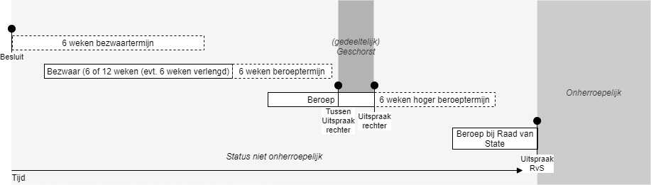
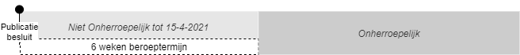
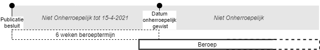
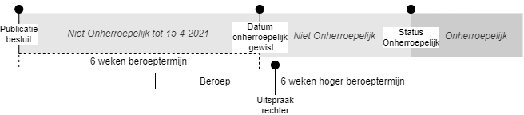
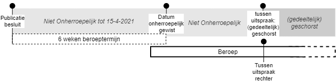
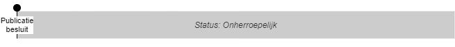

Herroepelijkheid
Tegen een deel van de besluiten van het BG kan beroep worden aangetekend. Uit een beroepsprocedure kan voortvloeien dat de regelgeving in een bepaald besluit moet worden gewijzigd. Om aan te geven of een besluit nog kan worden gewijzigd door een uitspraak van een beroepsorgaan voorziet STOP in een mechanisme dat deze "herroepelijkheid" borgt.
Drie juridische statussen
Een gepubliceerd besluit kan wat herroepelijkheid betreft drie statussen hebben:
Niet onherroepelijk: er zijn door gerechtelijke procedures nog aanpassingen op de regelgeving in het besluit mogelijk.
Geschorst: de regelgeving in het besluit is door de rechter met een tussenuitspraak (dus geen eindvonnis) tijdelijk aangepast.
Onherroepelijk: de gerechtelijke procedures zijn volledig afgehandeld en het is duidelijk dat de regelgeving in het besluit definitief is.

De drie statussen worden hieronder toegelicht.
1. Niet onherroepelijk
Voor besluiten waartegen beroep mogelijk is, geeft het BG bij de kennisgeving van de bekendmaking van het besluit het einde van de beroepstermijn aan als procedurestap. Aan de hand hiervan wordt de status "niet onherroepelijk" afgeleid tot de einddatum beroepstermijn.

Aan het einde van de beroepstermijn van een besluit moet het BG vaststellen of een of meerdere beroepen zijn aangetekend. Is er geen beroep aangetekend, dan is het besluit direct na het verstrijken van de beroepstermijn onherroepelijk geworden en hoeft het BG niets te doen.
Is aan het einde van de beroepstermijn wel beroep aangetekend, dan moet het BG de procedurestap "beroep(en) ingesteld" naleveren bij het besluit. Dit voorkomt dat de status Onherroepelijk automatisch wordt toegekend na het verstrijken van het einde van de beroepstermijn.

Als er geen hoger beroep meer mogelijk is of dat een eventuele termijn voor (hoger) beroep is verstreken wordt het besluit wordt onherroepelijk en BG geeft de procedurestap beroep(en) definitief afgedaan door.

2. Geschorst
De rechter schorst in een tussenuitspraak (een deel van) het besluit. Het BG geeft deze schorsing door als procedurestap "Schorsing". De status van het besluit wordt dan "geschorst".

Een schorsing kan na verloop van tijd worden opgeheven, ook al is er nog geen (definitieve) uitspraak. Het BG geeft een opheffing van een schorsing door als procedurestap schorsing opgeheven. De status van het besluit wijzigt dan weer naar niet onherroepelijk.
Gedeeltelijke schorsing
Een schorsing kan ook een gedeelte van een besluit treffen. Aangezien het vaak niet mogelijk om aan te geven welk deel van het besluit precies wordt geschorst, houdt STOP alleen bij of een schorsing van toepassing is of niet. Het BG kan een verwijzing naar de eigen website toevoegen, waar een toelichting wordt gegeven op de uitspraak van het beroepsorgaan.
3. Onherroepelijk
Een besluit en bijbehorende regeling is onherroepelijk als de gerechtelijke procedures volledig zijn afgehandeld en het eventueel (gedeeltelijk) vernietigde besluit (met behoud van rechtsgevolgen) definitief is geworden. Aangezien een deel van de besluiten helemaal geen beroepsprocedure kent, zijn de meeste besluiten direct onherroepelijk.
Het BG hoeft geen extra handelingen te verrichten om aan te geven dan een besluit direct onherroepelijk is. Dat een besluit direct onherroepelijk is, wordt in STOP afgeleid uit het ontbreken van de einddatum beroepstermijn.

Zie ook
Juridische informatie over beroep en de verwerking van beroep in STOP.